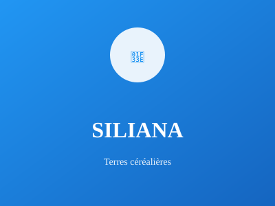

Région agricole du nord-ouest

Région agricole du nord-ouest, Siliana est connue pour ses terres fertiles et sa production de céréales et d'olives. C'est une zone importante de l'agriculture tunisienne avec un riche patrimoine archéologique romain.